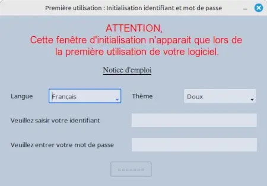
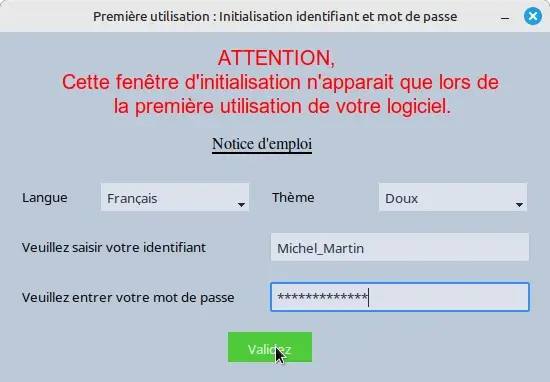
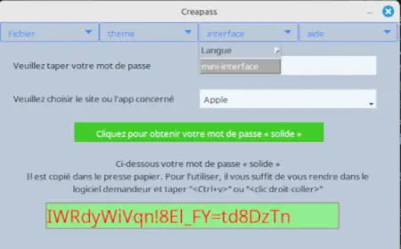
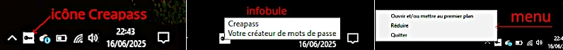

Generator de parole aleatorii reproducibile și autonom

Generator de parole aleatorii reproducibile și autonom
Când porniți Creapass pentru prima dată, veți vedea această fereastră:

Figura 1: Fereastra de inițializare
Software-ul a fost conceput pentru a fi utilizat fără mouse-ul (este mai ușor și mai rapid, dar mouse-ul rămâne disponibil). Zona activă este înconjurată de un cadru albastru; apăsarea tastei „Enter” validează și trece automat la zona următoare.
ATENȚIE: Identificatorul și parola dvs. sunt salvate sub formă codificată (amprentă digitală). Este IMPERATIV SĂ VĂ AMINTIȚI aceste date, deoarece nu pot fi recuperate.
→ Consultați sfaturile noastre pentru a alege un identificator și o parolă bune ←
După introducerea acestor date, fereastra devine:

Figura 2: Validarea inițializării
După inițializare, această fereastră va apărea la pornire:

Figura 3: Fereastra principală
Trebuie să introduceți parola pentru a accesa funcționalitățile. Apoi:

Figura 4: Parolă generată
Pentru o utilizare mai discretă, activați mini-interfața prin meniu.
Atenție, această opțiune din meniu este accesibilă doar după validarea parolei.

Figura 5: Activarea mini-interfeței
Mini-interfața apare apoi, împreună cu o pictogramă în zona de lângă ceas:
Un clic dreapta pe pictogramă afișează un meniu

Figura 6: Mini-interfață

Figura 8: Pictogramă lângă ceas: 1-repaus, 2-la trecere, 3-la clic dreapta
Dacă trebuie să mutați această fereastră, apăsați „Alt+m” pentru a afișa bara tradițională de sistem

Figura 6: Mini-interfață deplasabilă
Sfat: După alegerea site-ului, apăsați Enter pentru a genera o parolă, apoi din nou Enter pentru a șterge și a pregăti o nouă generare.
Dacă ați ales să deschideți direct în forma redusă, vi se va cere parola.
Atenție, acest lucru presupune că stăpâniți software-ul și că este modul dvs. obișnuit de lucru; nu veți mai avea acces la opțiunile „limbă” și „temă”